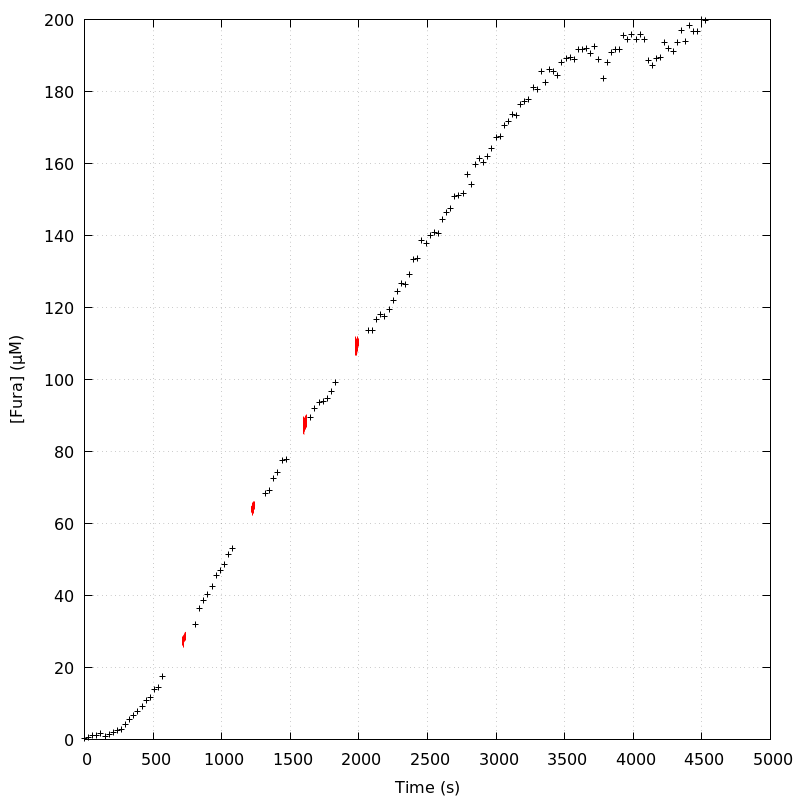
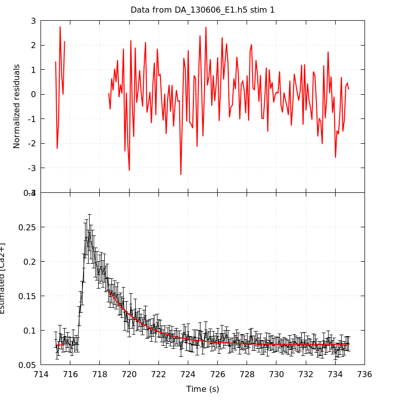
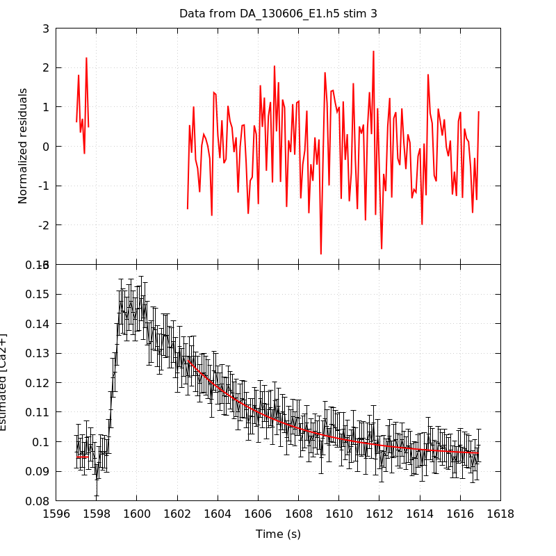
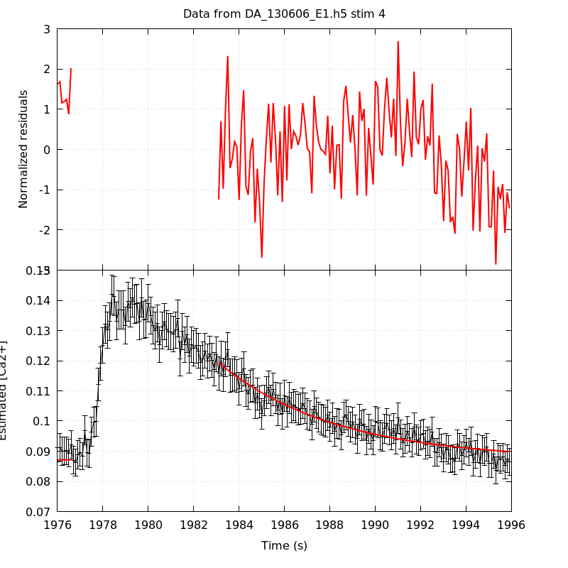

The baseline length is: 7.
When fitting tau against kappa_Fura only the transients for which the fit RSS and the lag 1 auto-correlation of the residuals were small enough, giving an overall probability of false negative of 0.02, were kept (see the numerical summary associated with each transient).
The good transients are: 2, 3.
Not enough good transients to keep going!
The time at which the 'good' transients were recorded appear in red.

On each graph, the residuals appear on top. Under the null hypothesis, if the monoexponential fit is correct they should be centered on 0 and have a SD close to 1 (not exactly 1 since parameters were obtained through the fitting procedure form the data.
The estimated [Ca2+] appears on the second row. The estimate is show in black together with pointwise 95% confidence intervals. The fitted curve appears in red. The whole transient is not fitted, only a portion of it is: a portion of the baseline made of 7 points and the decay phase starting at the time where the Delta[Ca2+] has reached 50% of its peak value.
The time appearing on the abscissa is the time from the beginning of the experiment.
Transient 1 is a 'bad'.

nobs = 171
number of degrees of freedom = 168
baseline length = 7
fit started from point 36
estimated baseline 0.0789188 and standard error 0.000614924
estimated delta 0.0790754 and standard error 0.00311185
estimated tau 2.39126 and standard error 0.13972
residual sum of squares: 221.323
RSS per degree of freedom: 1.3174
Probability of observing a larger of equal RSS per DOF under the null hypothesis: 0.00364197
WARNING: THE FIT IS NOT GOOD!
Lag 1 residuals auto-correlation: 0.014
Pr[Lag 1 auto-corr. > 0.014] = 0.441
Transient 2 is 'good'.
nobs = 161
number of degrees of freedom = 158
baseline length = 7
fit started from point 46
estimated baseline 0.0919411 and standard error 0.000624249
estimated delta 0.0500669 and standard error 0.001314
estimated tau 3.90407 and standard error 0.22046
residual sum of squares: 166.439
RSS per degree of freedom: 1.05341
Probability of observing a larger of equal RSS per DOF under the null hypothesis: 0.307174
Lag 1 residuals auto-correlation: 0.062
Pr[Lag 1 auto-corr. > 0.062] = 0.202
Transient 3 is 'good'.

nobs = 152
number of degrees of freedom = 149
baseline length = 7
fit started from point 55
estimated baseline 0.0948011 and standard error 0.000651327
estimated delta 0.0328298 and standard error 0.000992187
estimated tau 4.52266 and standard error 0.335543
residual sum of squares: 157.908
RSS per degree of freedom: 1.05979
Probability of observing a larger of equal RSS per DOF under the null hypothesis: 0.293029
Lag 1 residuals auto-correlation: -0.031
Pr[Lag 1 auto-corr. > -0.031] = 0.619
Transient 4 is a 'bad'.

nobs = 136
number of degrees of freedom = 133
baseline length = 7
fit started from point 71
estimated baseline 0.0872709 and standard error 0.000686524
estimated delta 0.032078 and standard error 0.000858267
estimated tau 5.1089 and standard error 0.344024
residual sum of squares: 161.966
RSS per degree of freedom: 1.21779
Probability of observing a larger of equal RSS per DOF under the null hypothesis: 0.0444193
Lag 1 residuals auto-correlation: 0.273
Pr[Lag 1 auto-corr. > 0.273] = 0.003
2 out of 4 transients were kept.
sigma(tau): 0.22046, 0.335543
Residual correlation at lag 1: 0.06171192956806314, -0.031177431499323442
Probablity of a correlation at lag 1 smaller or equal than observed: 0.20199999999999996, 0.619
RSS/DOF: 1.05341, 1.05979